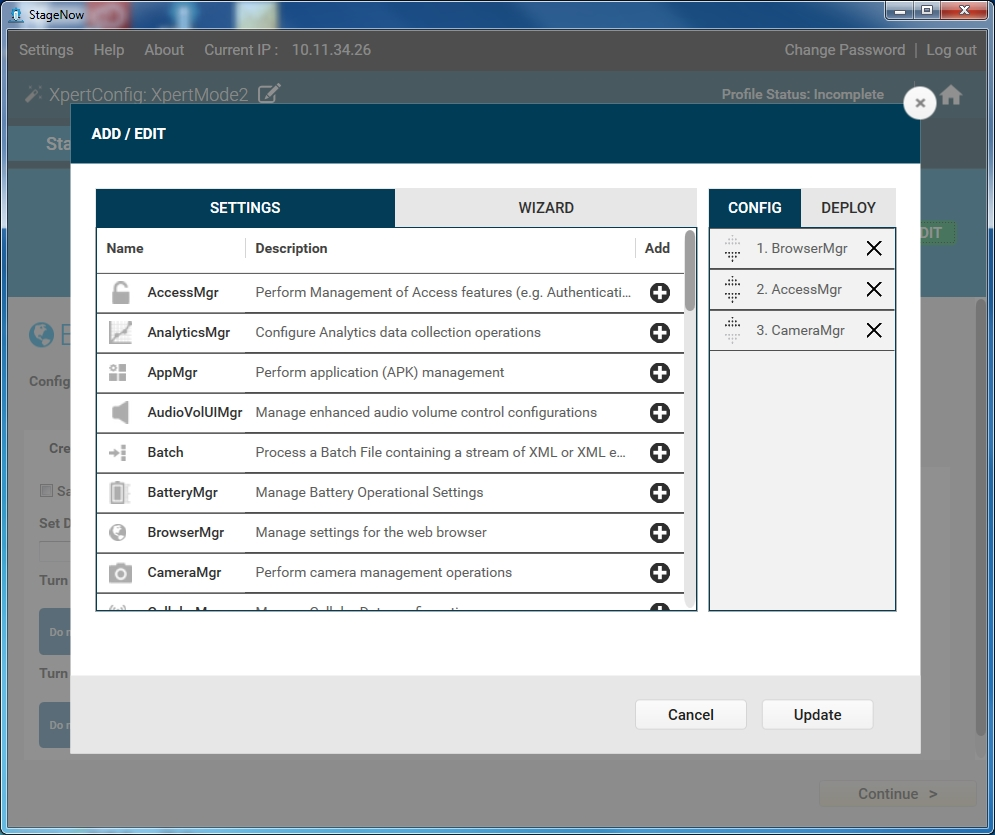
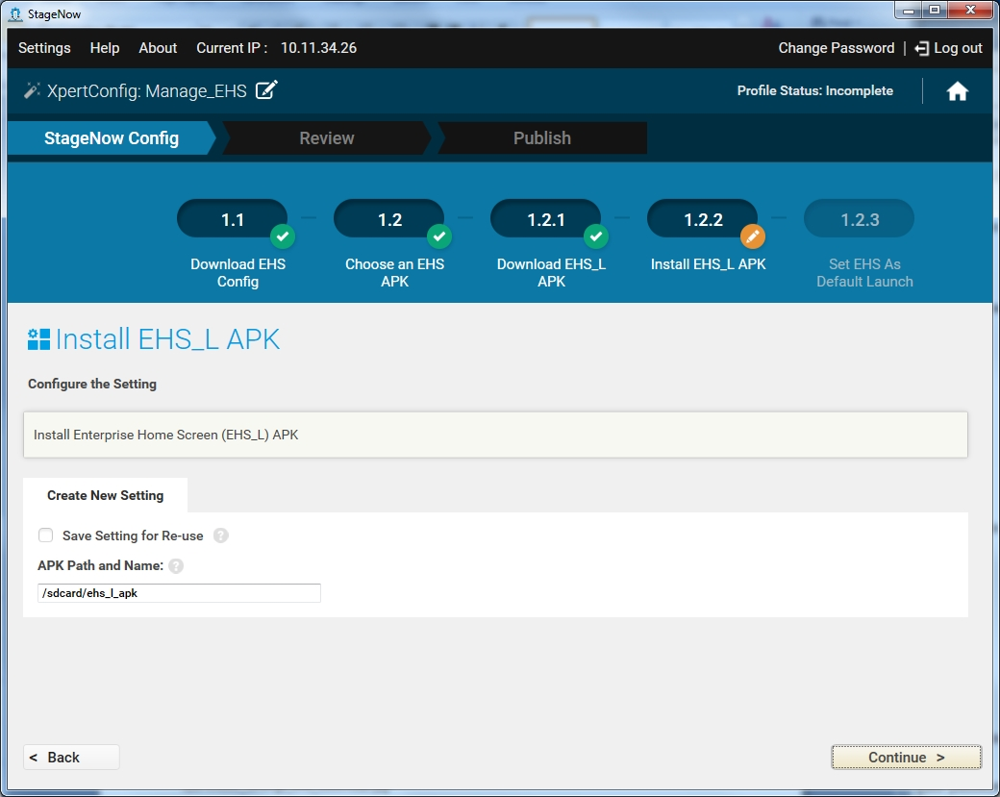

Xpert モードでは、カスタムのプロファイルを構築するための、[プロファイル ウィザード] および [設定タイプ] で設定できるオプションとプロセスの制御が強化されています。
このモードでは、StageNow ツールで提供される任意の設定やウィザードを、管理者が任意の順序で使用できます。たとえば、[Xpert モード] ウィザード内では [デバイスの設定] ウィザードが使用可能ですが、標準のウィザードで提供される設定以外の設定もその中で行うことができます。このように、エキスパートである管理者が、StageNow が持つ柔軟性を活かして、既存のウィザードが対象としていない機能を使用することが可能になります。このことは、Xpert ウィザードの RD セクションには適用されません。このセクションでは、管理者による特定の設定の選択が制限されています。
注:
StageNow ツールの構成セクション内で作成されたすべての設定は、ステージング バー コード、オーディオ ファイル、または NFC タグに保管されます。一方、導入セクションで作成された設定は導入サーバーに配置されます。
Xpert モード プロファイルを作成するには、次の手順を実行します。
[新しいプロファイルの作成] を選択します。
ドロップダウン メニューから MX のバージョンを選択します。
[Xpert モード] ウィザードを選択し、[作成] を選択します。

プロファイルの名前を入力して、[開始] を選択します。

注: プロファイルの作成時に、ウィンドウの右上にプロファイルのステータス ([未完了] など) が表示されます。
[追加/編集] ウィンドウで、[設定] タブを選択して [Xpert モード] プロファイルに設定を追加するか、[ウィザード] タブを選択してプロファイル ウィザードを [Xpert モード] プロファイルに追加します。
[構成] タブまたは [導入] タブを選択して、プロファイル ウィザードの一部を選択し、[Xpert モード] プロファイルに含めます。
各設定やウィザードの横にあるプラス アイコン (+) を選択して、必要な順序で [Xpert モード] プロファイルに追加します。すると、各項目が右ペイン ([構成] または[導入]) に移動します。

[追加] を選択してプロファイル ウィザードを進め、「ステージング プロファイルの作成」の説明に従って新しい [Xpert モード] プロファイルを作成します。

[Xpert モード] プロファイルのアップデート
プロファイルの作成中に、任意のタイミングで [追加/編集] ボタンを選択して [追加/編集] の [設定] および [ウィザード] ウィンドウに戻り、プロファイルの設定またはウィザードを追加、変更、または削除します。終了したら [更新] を選択します。

注:
StageNow 2.1 で作成された既存の [Xpert モード] プロファイルを開くと、前述のアップデートされた StageNow 2.2 Xpert モードのユーザー インタフェースにプロファイルがインポートされます。
Enterprise Home Screen (EHS) の管理
Enterprise Home Screen はエンタープライズ デバイスに表示されるアプリケーションを定義するものであるため、ユーザーが使用できるのは一部の機能のみです。StageNow 2.2 では、[Enterprise Home Screen の管理] サブウィザードを使用して、Zebra Enterprise のデバイスの Enterprise Home Screen を簡単に設定できます。単純にこのサブウィザードを Xpert モード プロファイルに含めて、画面の手順に従って操作します。EHS ディストリビューションの一部として利用可能な EHS 構成ファイルおよび EHS APK の詳細については、EHS ユーザーガイドを参照してください。
EHS サブウィザードは、他の設定やサブウィザードとともに、Xpert モード プロファイルの中の任意の手順として構成します。次の例では、EHS サブウィザードのみを使用しています。このサブウィザードを使用する前に、EHS_L および EHS_R APK を含む EHS ディストリビューションを取得し、ワークステーションに抽出します。
Xpert モード ウィザードを使用して EHS を設定するには、次の手順を実行します。
[新しいプロファイルの作成] を選択します。
ドロップダウン メニューから [MX 4.4] または [MX 5.0] バージョンを選択します。
[Xpert モード] ウィザードを選択し、[作成] を選択します。

プロファイルの名前を入力して、[開始] を選択します。
[追加/編集] ウィンドウで、[ウィザード] タブを選択します。

[Enterprise Home Screen の管理] の横のプラス記号 (+) を選択します。
[追加] を選択します。
[EHS 設定のダウンロード] ウィンドウで、[はい] を選択して、ステージングするデバイスに EHS 構成ファイルをダウンロードします。このファイルの作成の詳細については、EHS のマニュアルを参照してください。

ワークステーションからファイルを参照して選択し、[続行] を選択します。作業しやすいよう、デバイスのパスはあらかじめ構成されています。

インストールする APK のタイプを選択し、[続行] を選択します。デバイスおよび EHS APK のマッピングについては、EHS のマニュアルを参照してください。

デバイスにプッシュする EHS_L (または EHS_R) APK の場所を選択し、[続行] を選択します。

プッシュされた APK をデバイスにインストールし、パスが正しいことを確認してから、[続行] を選択します。

[続行] を選択して、EHS をデバイスのデフォルトの起動画面として設定します。
引き続き EHS プロファイルを作成するには、「確認」を参照してください。
Enterprise Home Screen のサブウィザードと他の設定やウィザードとの併用
Enterprise Home Screen の構成ファイルの一部の構成パラメータでは、デバイスを強制的に再起動してパラメータを適用することができます。他の設定とウィザードを使用して [Xpert モード] プロファイルを作成する場合、管理者は構成の適用中にデバイスが再起動されないようにする必要があります。StageNow クライアントと MX フレームワークでは、デバイスの再起動後にステージング プロセスを再開できません。デバイスの再起動は、必要に応じてウィザードの最後の手順として行うことをお勧めします。
次のリストで、デバイスを強制的に再起動する作業と、同じ結果を得られる同等の StageNow 設定を示します。これらの設定によって、EHS ウィザードを使用してプロファイルと他の設定を同時に適用したときの強制的な再起動を防ぐことができます。
クイック設定パネルでの Wi-Fi と Bluetooth のオン/オフを無効にする: Bluetooth を管理する Wireless Manager と Wi-Fi を管理する Wi-Fi Manager を使用する。
クイック設定パネルで機内モードのオン/オフを無効にする: 機内モードを管理する設定マネージャを使用する。
最近使用したアプリのリストを消去する: Power Manager を使用して再起動する (プロファイルの最後の手順でこれを実行する)。